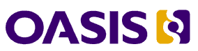

OASIS Broadens PKI Agenda to Form
Identity and Trusted Infrastructure (IDtrust) Member Section
Boston, MA, USA; 24 May 2007 -- The international open standards consortium, OASIS, has expanded its Public Key Infrastructure (PKI) work to encompass the full identity and trusted infrastructure marketplace. The new OASIS IDtrust Member Section will promote greater understanding and use of standards-based technologies, policies, and practices for identity and trusted infrastructure. The group will provide a neutral setting where government agencies, companies, research institutes, and individuals can work together to facilitate the use of
these technologies.
“The U.S. federal government has been working for years to develop standards, procedures and guidelines for implementing e-identity management services that can ensure trusted, secure transactions over the Internet. IDtrust will help accomplish that mission,” said Peter Alterman, Ph.D., Asst. CIO, EAuthentication, National Institutes of Health, and Federal PKI Policy
Authority Chair.
“IDtrust will advance standards that provide the basic security necessary for carrying out electronic business,” added June Leung, chair of the Steering Committee for the OASIS IDtrust Member Section. “These standards make it possible for parties who do not know one another or who are widely distributed to communicate securely by adopting a chain of trust.”
Other members of the IDtrust Member Section Steering Committee include Abbie Barbir of Nortel Networks, Arshad Noor, John Sabo of CA, and Ann Terwilliger of Visa International.
Working to identify trust policies for assurance and standardization, IDtrust members will focus on validating and building trust paths. They plan to catalog implementation projects, publish adoption reports, and conduct studies on costs, benefits and risk management. The Member Section will also oversee the work of two OASIS Committees: Enterprise Key Management Infrastructure (EKMI), which defines symmetric key management protocols; and PKI Adoption, which advances the use
of digital certificates as a foundation for managing access to network resources and conducting electronic transactions. The Steering Committee seeks suggestions for forming additional committees.
IDtrust has its roots in PKI Forum, an organization that was founded in 1999. It transitioned its work to OASIS in 2002, where it continued to operate as an independent body focused on broadening adoption for PKI.
“The expansion and re-chartering of OASIS PKI as IDtrust marks an exciting milestone in the evolution of this work,” noted Patrick Gannon, president and CEO of OASIS. “By broadening its scope, IDtrust will be better positioned to reduce barriers to adoption and effectively address data privacy and cryptographic issues, as well as interoperability, outsourcing and application integration of trusted infrastructures.”
Organizations participating in IDtrust include CA, CATCert Agencia Catalana de Certificacio, EMC, Forum Systems, Jericho Systems, Nortel Networks, Sterling Commerce, Verisign, Visa International, WISeKey, and others. Public sector agencies from around the world, including Canada's Public Works & Government Services, Norway's Directorate of Labour and Welfare, and Tunisia's National Digital Certification Agency--as well as the Electronics and Telecommunications Research Institute (ETRI) and Oxford University--are also participating. IDtrust welcomes other interested parties to join their work at any time.
Support for IDtrust
CA
“CA is pleased to support the formation of the IDtrust Member Section. Its broad focus on identity technologies, trust policies, and education will help meet the growing need for open, standards-based trust infrastructure,” said John Sabo, director of government global relations at CA.
Visa
“My experiences in implementing public key cryptography at Visa have made me very aware of the importance of identifying workable solutions. I am committed to supporting the work of IDtrust to achieve this,” said Ann Tertwilliger, Director of Security Projects, Visa International.
Additional information:
OASIS IDtrust Member Section:
http://www.oasis-idtrust.org/
OASIS EKMI Technical Committee:
http://www.oasis-open.org/committees/ekmi/
OASIS PKI Adoption Committee:
http://www.oasis-open.org/committees/pki/
OASIS (Organization for the Advancement of Structured Information Standards) is a not-for-profit, international consortium that drives the development, convergence, and adoption of e-business standards. Members themselves set the OASIS technical agenda, using a lightweight, open process expressly designed to promote industry consensus and unite disparate efforts. The consortium produces open standards for Web services, security, e-business, and standardization efforts in the public sector and for application-specific markets. Founded in 1993, OASIS has more than 5,000 participants representing over 600 organizations and individual members in 100 countries. http://www.oasis-open.org
Press contact:
Carol Geyer
OASIS Director of Communications
carol.geyer@oasis-open.org
+1.978.667.5115 x209 (office)
+1.941.284.0403 (mobile)